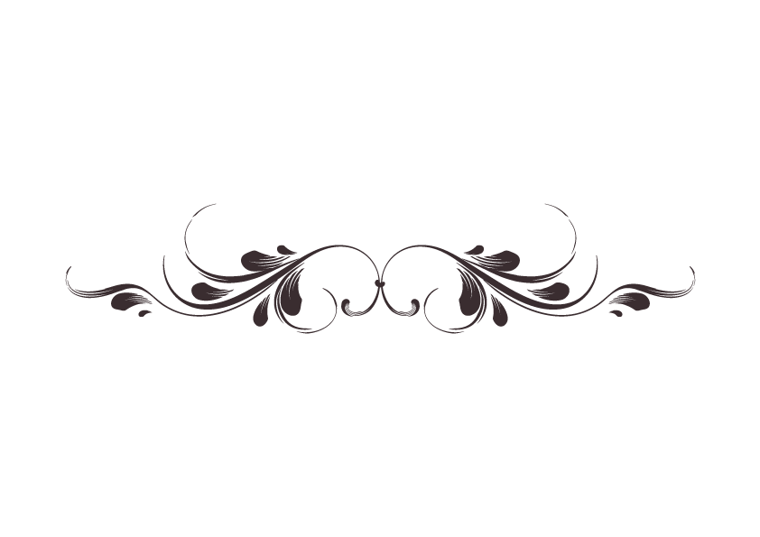

Nom : ABBAS Yaser
Date de naissance : 28/10/1989
Adresse : Ile de France
A propos de moi
Passionné de danse et de violon,
je suis aujourd’hui en reconversion professionnelle dans le domaine du numérique.
De nature autodidacte, j’ai aujourd’hui à cœur d’apprendre le métier de développeur web.
COMPETENCES
Informatiques :
Langages :
HTLM, CSS, JAVA, JqueryLogiciels :
Photoshop, Illustrator, Scratch, Powtoon, WordPress-
Linguistiques :
Français / Anglais / Arabe
FORMATIONS
- 2018 à 2019 : Formation SIMPLON "java"
- 2018 : Formation SIMPLON « CAPPRIO » (culture et technique du numérique)
- 2016 à 2017 : Formation CARED Artiste polyvalent du spectacle et de l’évènementiel
- 2004 à 2010 : Formation académique de danse
INTERETS
CONTACT
(+33)7 70 36 51 83
abbasyaser989@gmail.com
abbasyaser989@gmail.com